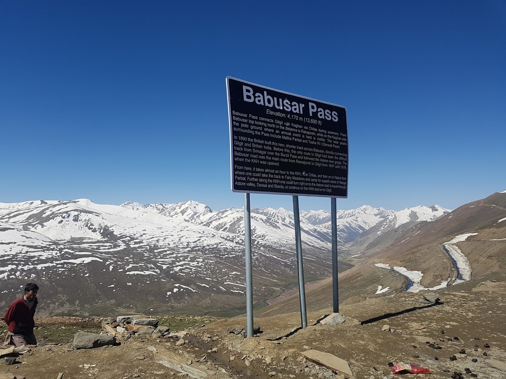
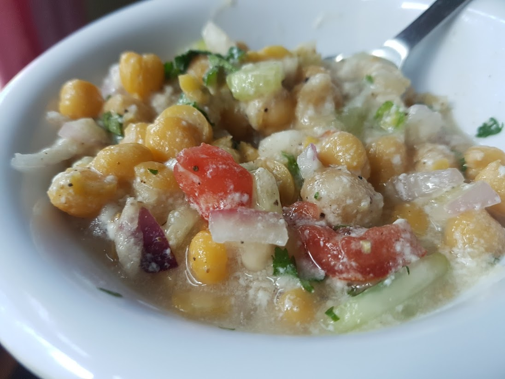

Naran 으로 향하는 길
2017년 06월 03일
파키스탄
우려와는 다르게 7시가 되기전에 기사 아저씨가 호텔로 왔다. 어제 예약했던 나란행 자동차 예약이다. 기름을 넣고 출발했다. 가는길에 룰루사 호수와 듀디팟 레이크로 가자고 했는데 아저씨가 영어를 못해서 갈 수 있을지는 모르겠다. 칠라스가 마음에 안들어서 빨리 떠나고 싶었다. 아침 일찍 탈출하니 좋다.
주유소에 기름을 넣었다. 어제 차 예약할때 기름값만 4천 루피라더니 가격을 유심히 봤는데 기름값 24리터에 2000루피더라. 기름을 넣는 장치를 봤는데 굉장히 오래되었지만 잘 작동하는 올드 패션 기계였다. 나는 이런 올드 패션 기계가 좋다. 단순한 동작은 단순한 기계구조로 만들수 있다. 굳이 디지털 IC와 수많은 모터로 기계를 채울필요가 없다. 지금은 오버스펙 기계시대가 분명하다.
6000루피짜리 차를타고 바부사 패스로 왔다. 가는 길은 확실히 아름다웠다. 이왕 비싸게 낸 돈 더 천천히 많이 멈춰서 즐기기로 했다. 사진도 많이 찍었다.
바부사패스를 구경한뒤 출발하려고 하는데 시동이 안걸렸다. 차가 잠겨있었는다. 무선 리모컨으로 열지 않으면 시동이 걸리지 않나보다. 당황했지만 이 지역이 추워서 그런것으로 생각되어 내가 키 온도를 높혀줬다. 한 10분정도 겨드랑이에 놓았더니 정말 시동이 걸렸다. 나는 앤지니어라고 자랑했다. 아저씨도 좋아했다. 내가 한수 가르쳐줌 헤헿.
바부사 패스를 넘은뒤 보이는 카간(Kaghan)밸리는 길깃-발티스탄의 건조하고 황량한 풍경과는 달랐다. 눈 과 초록 산과 파란 강과 호수가 한데 어우러져있는 계곡이었다. 나 혼자만을 위한 스페셜 차였기때문에 나는 틈만 있으면 차를 멈춰세우려고 했다. 아저씨 눈치가 좀 보였지만 어쩔수 없었다. 그러려고 비용을 지불한 것이니.
룰루사 레이크에 도착했다. 아름다웠다. 이런데 오면 더 오래있고 싶지만 빨리 가자고 재촉하는 바람에 나왔다. 나오는 길에 어떤아저씨가 인사한다. 멀리서 봤는데 지질학자냐고 물어본다. 내가 호수 앞에서 계속 사진찍고 깝쭉대서 그렇게 보였나보다. 기분은 좋았다.
다음 목적지인 듀디팟 과연 데려다 줄까? 지도상으로는 나란에 가는길에 있지않고 존 더 멀리 가야한다. 영어를 못해서 그런지 듀디팟 도 오케이라고 했는데 기대는 안하고있다. 그리고 역시 듀디팟은 안갔다.
갖출것 다 갖춘 리조트 호텔이 그립다. 여행 나오기전에 홍천에서 비발디 리조트 생각이 났다. 방도 깨끗하고 다양한 시설도 갖춘 그곳이 참 좋았는데. 베낭여행중에는 그런곳을 찾을 수 없다. 무조건 싼데만 묶는다.

바부사 패스
룰루사 호수
나란 도착. 칠라스에 비해 엄청 큰 도시였다. 좋았다. 식당도 많고 물건이나 과일도 많이 팔고 말이다. 숙소는 대충 아무곳이나 잡았다. 가격은 700으로 흥정했다. 칠라스에서 묶었던 호텔보다는 훨씬 좋았다. 사람이 없고 좀 어둡고 추운것만 빼면.
이곳 나란도 사람들이 영어를 못한다. 대화에 약간 어려움이 많다. 현지인이 영어를 못하면 여행 난이도가 장말 어려워지는것 같다. 그나마 워까르라는 친구가 약간 영어를 할수 있었지만 소통에 어려움이 있는것은 사실이었다.
짐을 풀고 시내를 조금 돌아다녔다. 외국인은 하나도 없었다. 늘 그랬드시 사말들이 엄청 쳐다본다. 다들 이상한 시선 불편하다. 아직도 적응이 잘 안되는 부분이다. 식사를 할수 있는 숨겨진 가게가 없다고 한다. 길깃에는 있었는데 ㅜ
그래도 호텔에서 플라로를 만들어줘서 달과 함께 먹었다. 점심마다 이걸 먹자니 물린다. 맛있고 다양한 음식을 먹고싶다. 그래도 이곳에 있는 사람들 좋은사람들인것 같다. 호텔사람들이 공짜로 chard 라는샐러드를 만들어줬다. 맛있었다. 나는 아무거나 다 잘먹으니깐!

호텔 직원이 만들어준 Chard 샐러드
밖은 너무 더워서 나는 거의 호텔에만 있었다. 오랫만에 주어진 시간. 일기와 글을 썼다. 파키스탄에서 만난 즐거운 경험과 이슬람 문화에 대한 관심과 이슬람 문화 독후감을 한참을 쓰다가 에버노트가 다운됐다. 그동안 쓴글을 송두리째 날렸다. 진짜 화가났다. 다시 글쓸 힘이 없었다. 젠장. 그때부터 기분이 점점 이상해졌던것 같다.
호텔 안에서 안절부절 못하고 있었다. 내일 뭘할것인지 잘 모르겠다. 적극적으로 계획해야하는데 어렵다. 그런 부분이 아직 여행에 적응하지 못한 부분인것 같다. 적극적으로 여행지에서 무엇을 할것안지 찾고 미리 계획하고 수행해야하는데 그게 잘 안된다.